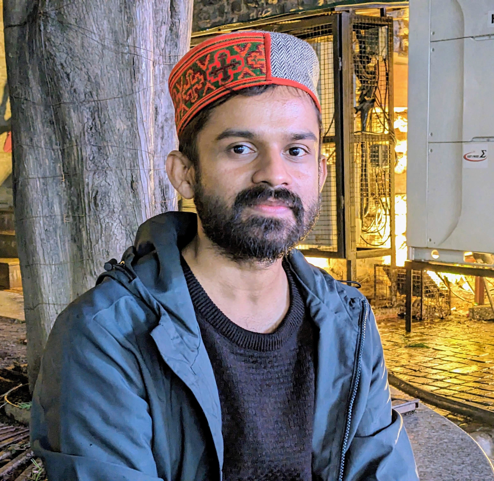

Dr. Rajat Choudhary
⚡ Recent Updates & Announcements
Biography & Overview
Dr. Rajat Choudhary is currently an Ox-CSC-AI Fellow at the University of Oxford, specializing in Water Resources Engineering, hydroclimatology, and AI-driven land-atmosphere interactions. His academic focus lies in uncovering how large-scale climate variability and atmospheric moisture transport dictate regional extreme precipitation regimes and catastrophic flood dynamics across global river basins.
He completed his Ph.D. in Water Resources Engineering at the Indian Institute of Technology Delhi (IIT Delhi), an M.S. by Research from IIT Palakkad (with coursework at IIT Madras), and his undergraduate degree in Civil Engineering from NIT Hamirpur.
Research Focus & Areas
Current investigations center around process-based simulation, atmospheric tracking, and climate adaptation frameworks:
- Atmospheric Moisture Transport & Vapor Flux
- Hydrological Extremes & Extreme Floods
- SWAT & Distributed Hydrological Modeling
- Land Surface Processes & Soil Moisture Feedback
- Climate Change Impact Assessment
Educational Background
| Degree | Institution | Duration |
|---|---|---|
| Ox-CSC-AI Fellowship | University of Oxford | Present |
| Ph.D. in Water Resources Engineering | Indian Institute of Technology (IIT) Delhi | 2020 – 2025 |
| M.S. (Research) in Water Resources | Indian Institute of Technology (IIT) Palakkad | 2018 – 2020 |
| Semester Exchange Program | Indian Institute of Technology (IIT) Madras | 2018 – 2018 |
| B.Tech in Civil Engineering | National Institute of Technology (NIT) Hamirpur | 2013 – 2017 |
Journal Publications
- Choudhary, R., & Dhanya, C. T. (2026). Associated influence of moisture sources and catchment drivers on the flood mechanism of a tropical basin. Journal of Hydrology, 672, 135363. https://doi.org/10.1016/j.jhydrol.2026.135363 Q1, Web of Science; IF: 7.3
- Choudhary, R., Dhanya, C. T., Gosain, A. K., & Chander, S. (2025). Deciphering the changes in spatio-temporal characteristics of flood events across India. Hydrological Sciences Journal, 70(14), 2498-2512. https://doi.org/10.1080/02626667.2025.2551133. Featured Article. Q2, Web of Science; IF: 2.9
- Rajat & Athira, P. (2021). Calibration of hydrological models considering process interdependence: a case study of SWAT model. Environmental Modelling & Software, 144, 105131. https://doi.org/10.1016/j.envsoft.2021.105131. Q1, Web of Science; IF: 5.2
- Choudhary, R., & Athira, P. (2021). Effect of root zone soil moisture on the SWAT model simulation of surface and subsurface hydrological fluxes. Environmental Earth Sciences, 80(18), 620. https://doi.org/10.1007/s12665-021-09912-z. Q2, Web of Science; IF: 3.3
- Banad, S., Choudhary, R., Wei, Y., Patil, R. J., & Dhanya, C. T. (2026). Effects of climate change on ecologically sensitive flows in the Goulburn River Basin, Australia. Hydrological Processes, 40(8), e70666. https://doi.org/10.1002/hyp.70666. Q2, Web of Science; IF: 3.1
- Choudhary, R and Dhanya, C. T. (Accepted for Publication). From Moisture Transport to Extreme Rainfall: A Framework for Identifying Standalone Atmospheric Predictors and Mechanisms in a Flood-Prone Tropical Basin. JGR: Atmospheres. Q2, Web of Science; IF: 3.8
Conference Proceedings
- Choudhary, R. and Dhanya, C. T. (2025, October). Spatio-temporal characteristics of flooding over India and their links to moisture sources (IAHS-2025).
- Dhanya, C. T. and Choudhary, R. (2024, December). On the Changing Characteristics of Flooding over India and the Moisture Sources. In AGU Fall Meeting Abstracts (Vol. 2024, pp. H14A-05).
- Choudhary, R., Thulaseedharan Dhanya, C., & Gosain, A. K. (2023, May). Unravelling the sources of moisture for precipitation events in a flood-prone Indian basin. In EGU General Assembly Conference Abstracts (pp. EGU-9436).
Field Observations & Conferences

Ganga basin hydrological data collection campaign (2024).

Research presentation at the International Water Resources Conference (2023).

Soil moisture sensor deployment during pilot study in Kerala (2022).